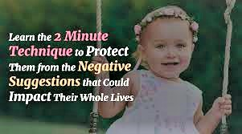

As parents and educators, we want to see our children possessing more than just a positive self-image.
Our goal is to help them develop into upright, happy, loving, giving and productive people. To counter the constant attack of negative messages that daily barrage our children, our children require a rock solid, bulletproof self-image of their intrinsic self - worth to empower them to honestly know and recognize their own strengths and weaknesses.They should have the fundamental belief that they are still “under construction” and be accepting of themselves even when they make mistakes.They should live with the credo that the goal in life is to work on making oneself as perfect as possible, and that learning from mistakes is part of the process. Our children should be emotionally stable when facing a lack of success, a disappointment, or somebody’s negative behavior or statements towards them; they must see these experiences as being external to themselves. They should view these experiences as learning opportunities that aid them in improving themselves, checking and\or adjusting their moral compass or understanding the way another person of deals with frustration. While they are willing to learn and change based on lesson they have learned, these experiences must not stop them from accepting themselves for what they do correctly or diminish their self - worth.
Our children should possess an internal sense of security and confidence. This will allow them to take on new challenges, and to have the openness to hear and benefit from the ideas and experiences of others. In the same way that they honestly know and recognize their own strengths and weaknesses and are accepting of themselves, they should be able to see and appreciate the needs and/or the capabilities of others. They should not feel any need to be happy at someone else’s misfortune nor have a fear of acknowledging that someone is able to do something better than they are able to do it.
This tall order is actually attainable, and, surprisingly, doable, even in our fast paced and pressure filled world. It can be done in the privacy of one’s home, in full accordance with one’s religious and moral beliefs and values. It does not require any medication. It is the Goulding method of Sleeptalk for children.  It is not a gimmick or a fad. It is a healthy, positive and non - manipulative parenting tool that takes only a few minutes of a parent’s time with each one of their children, nightly. It is a precise method that allows parents to give over the normal message of their love to their child, and the message of the child’s intrinsic lovability. When using this proven method, those messages are accepted into their child’s subconscious, without it being rejected. You can check it out at Thank you so much! I look forward to hearing from you and I appreciate your help in spreading, what I see as, a game changing skill to parents.